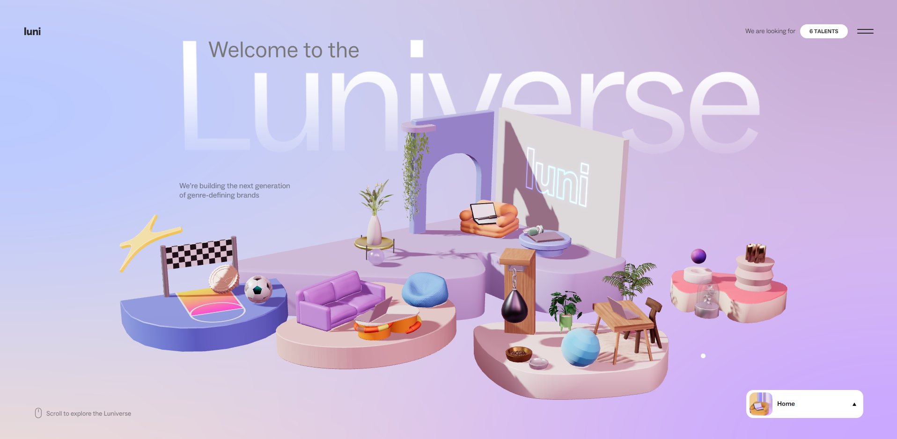
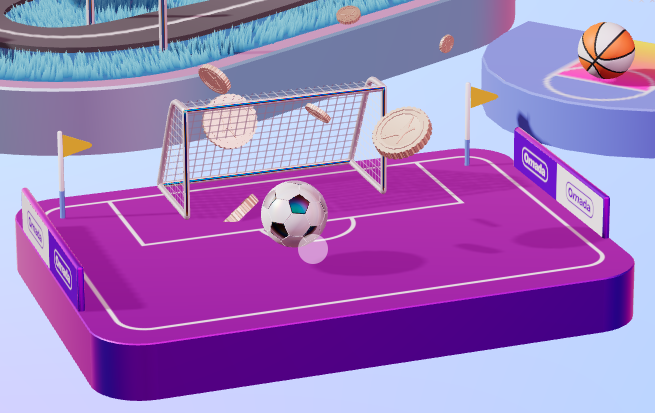
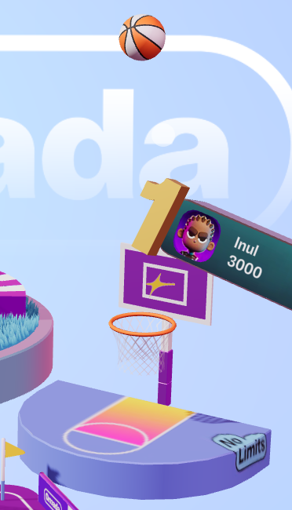

Assignment One

1. What was the first thing you paid attention to when interacting with the experience?
The first thing I paid attention to upon clicking this link is Luniverse's cute pastel colours, the miniature 3D models and the way the mouse was able to move the world in such an unique way. Whenever I hovered my mouse over these 3D islands, the 3D objects would float up in a cheerful manner which was mesmerising to watch.
2. Spend two minutes with the experience and create a list of each of your discrete actions.
- I played with the soccer ball and tried to shoot it in the goal multiple times
- I tried shooting the basketball into the hoop and clicking the basketball up high
- Checked the info for their Omada app
- Looked over the buttons on the side and the options they provide.
- Hover over the studio world
3. What part of the experience did you spend the most time engaging with?
I have noticed that I spent the most time trying to shoot the soccer ball within this experience as it was satisfying when you shot the ball and a bunch of coins would burst out of the goal. Another part of the experience I was engaging with was the basketball by testing the limits of how high it can go by clicking it multiple times. It can only surpass a certain limit before you can't click it in the air anymore.
4. What is your impression of the intended primary goal of the interactive experience?
Based on my impression for the intended purpose, I think that this is a very creative way to promote an app and look for potential workers. The intended purpose of the Luniverse is mainly to scope out for creative individuals to hire. With the experience that the website provided, it made me more compelled in looking through their available positions due to how fun it was to interact with the different assets in the website. This fun experience allows users to spend longer on the website and feel more compelled to browse around to find other fun activities.


5. What is your impression of the intended primary goal of the interactive experience?
Based on my impression for the intended purpose, I think that this is a very creative way to promote an app and look for potential workers. The intended purpose of the Luniverse is mainly to scope out for creative individuals to hire. With the experience that the website provided, it made me more compelled in looking through their available positions due to how fun it was to interact with the different assets in the website. This fun experience allows users to spend longer on the website and feel more compelled to browse around to find other fun activities.
6. How does the interactive experience communicate this primary goal?
They communicate their primary goal of finding creative applicants by showing their love for design and learning, whilst stating that they thrive for endless creativity. Through their use of 3D assets and interesting UI design, it demonstrates their love for design and creativity whilst valuing their employees’ skillsets.
7. What is your impression of how the experience should be interacted with over time? (For how long and how many different times)
Based on my impression, I believe that the experience intends for the user to have fun with the 3D assets whilst you go through the information which could take up to 1-3 minutes. I believe that playing with 3D models like soccer, basketball, eggs in a pan and punching bag would be interacted with for 2 minutes each or less, everytime you come across it. Longer times will probably be spent on reading the main information eg. Omada app, careers, positions, their mission and their drive to push creativity and diversity. This website is intended for repeated visits to pull in users who are seeking for a creative job through small and fun interactions.
8. How does the interactive experience communicate how it should be interacted with over time?
The overall interactive experience does not encourage repeated visits as there is no progress checking or saved history, unless someone was interested in a position. The 3D models are the main displays on the screen but on the side, there will be buttons situated at the side which prompts the users to click on them. I believe that the designers of this website want the users to be immersed in this world and interact with different items and eventually stumble upon the informational tabs. The main information on this website is seen as an afterthought compared to its appealing visuals to ensure that users spend longer on the website, admiring its cute visuals.
9. What other media forms (digital or otherwise) does the experience reference?
The other forms of media that the experience reminds me of AIRBNB advertisements/TV commercials that involve miniature 3D models and the same high angle. This website also reminds me of 3D assets that you would use in mobile games like monument valley and dancing line, with the overly simple textures and low poly texture.